Configuration 2 Vacuum Housing Power, Control, and 24V Power Cable
Parts and Materials Required
- VACUUM HOUSING CABLE, HIGH POWER [CBL-02673]
- Panther Tool Kit
- Zip Ties
Time Required
- 2 Hours
Procedure
Part A: Install the Vacuum Housing Power Cable
- Put on proper PPE.
- Shutdown the Panther System and PC.
- Unplug the power cable from the system.
- Remove the vacuum module and place on a sterile, clean workbench.
 Remove all ten M5x10 screws from the front cover. Remove the front cover from the housing ( carefully guide the cables through the hole in the upper left corner of the cover).
Remove all ten M5x10 screws from the front cover. Remove the front cover from the housing ( carefully guide the cables through the hole in the upper left corner of the cover).
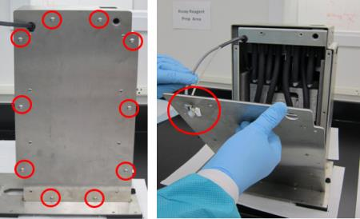
- Remove the other ten M5x10 screws from the upper and lower part of the housing.
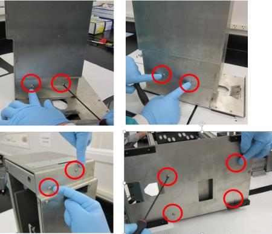
- Slide the inner housing out.
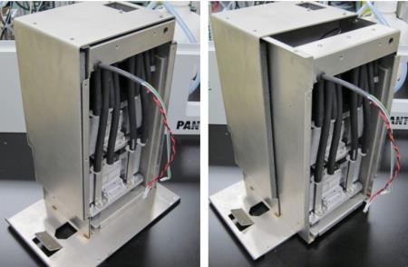
- Remove the Neoprene tubing from the vacuum to allow access to the muffler.
- Remove the four M6x8 screws underneath the inner housing.
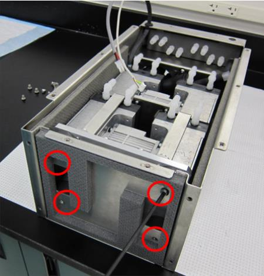
- Note the fan on top of the housing is routed into the back of the pumps, where it is connected to the PCB. Tilt the pumps forward to access the PCB connections.

Caution—Connector crimps are fragile. Do not allow tension on the cables!!! 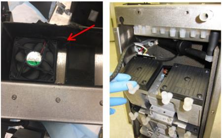
- Disconnect the vacuum housing power and vacuum control connectors from the Vacuum Pump PCB.
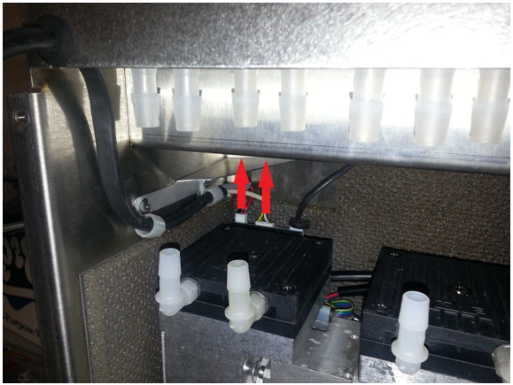
- Remove the vacuum housing power, and control cable and grommet from the vacuum housing.
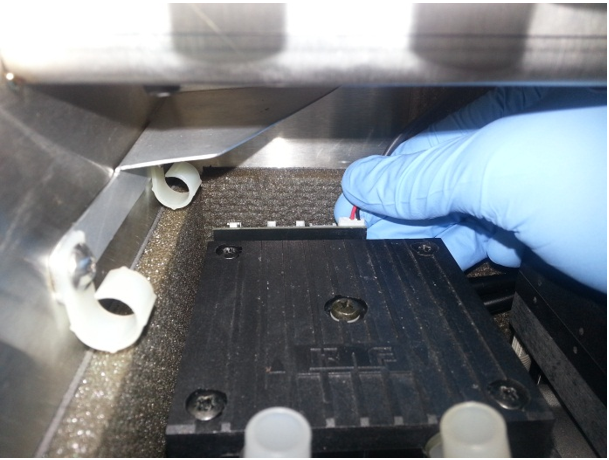
- Connect the new vacuum power and control cables to their respective connectors on the vacuum PCB.
- Route the new cable out of the housing through the two clips and install grommet.
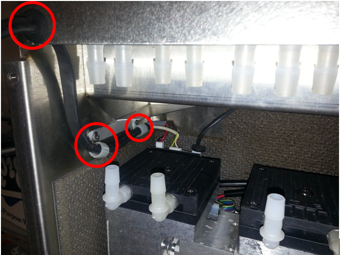
- Return muffler to original position and screw into place with a 3mm hex driver.
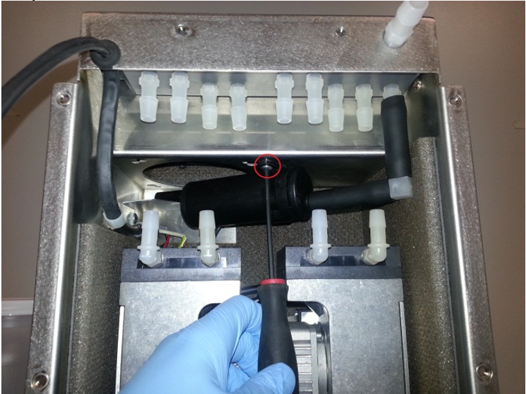
- Install the Neoprene tubing back onto the pumps. Ensure they are in the configuration pictured below.
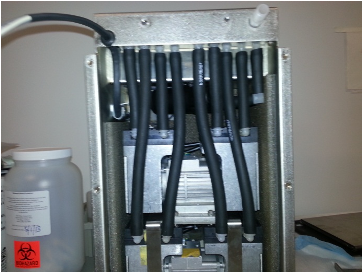
- Reinstall the inner housing back into the outer housing.
- Reassemble the outer housing.
Part B: Install +24V Vacuum Power Cable
- Pull the waste drawer as far out as possible to allow access to the cable panel and power supply at the back of the system.
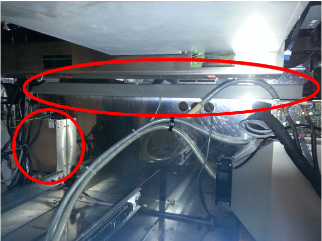
- Pull the cable chase off of the system.
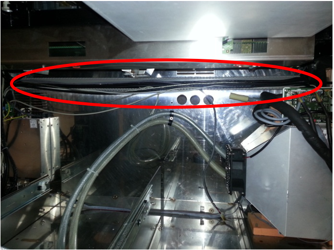
- On the back of the system, use a 3mm hex driver to loosen the four screws attaching the power supply to the system.
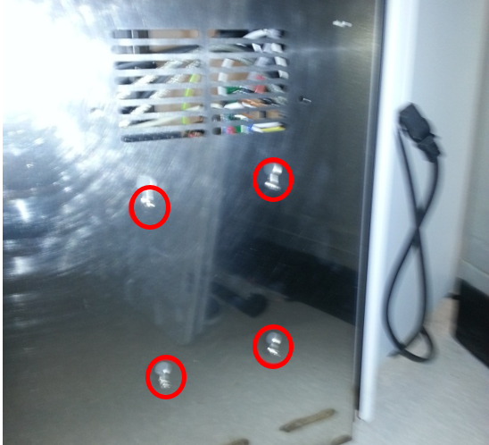
- From the left side of the system, lift up on the power supply and pull to remove the power supply from the rear of the system.
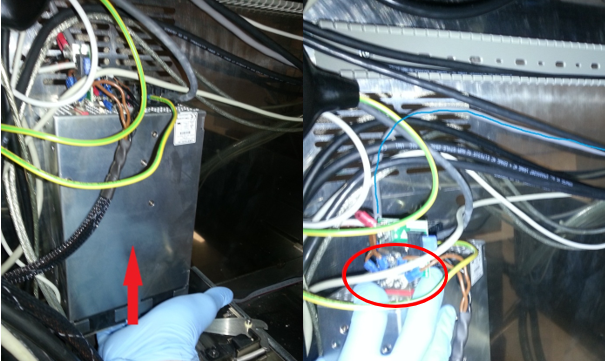
- Use a 3mm hex key to unscrew the screws on the power supply posts.
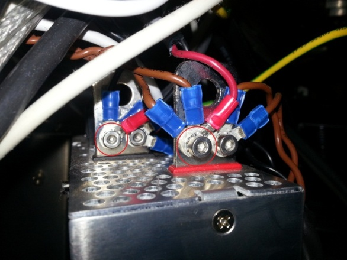
- Remove the two lugs connected to the current vacuum power cable.
In this example they are the black and red cables with red housing.
Remove vacuum power cable from system. Screen shot below for reference only. Your cable type might differ.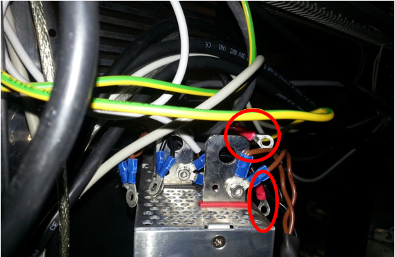
- Next connect the new power cable lugs to power supply with the 3mm hex key and screws.
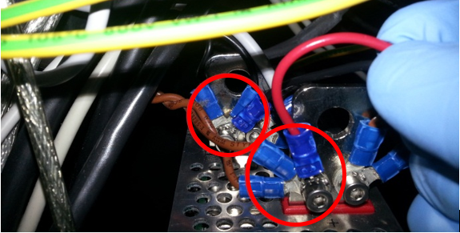
- Route the new power cable through cable panel area. If necessary, use zip ties to hold cables in place.
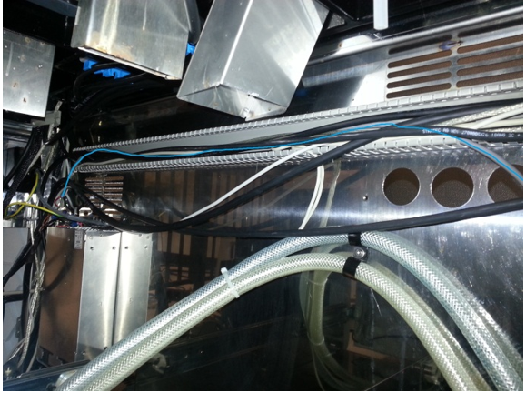
- Reattach cable panel once all wires are secured in cable panel housing.
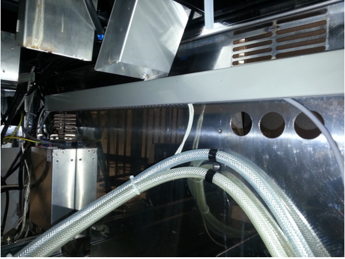
- Close the waste drawer.
- Reinstall the vacuum housing module.
- Reinstall the Universal Fluid Drawers.
- Plug in the Panther Power cable.
Verification
- Power on the Panther System and PC.
- Log in to the FSE shield.
- Open the Service Software.
- Initialize the Vacuum.
- Activate the Vacuum & Read the Vacuum pressure.
- Verify the vacuum is within specifications.
The vacuum level must read between -203mbar and -270mbar and the vacuum pump speed must read above 1650rpm.
If needed refer to Configuring the Quad Head Vacuum Pump Speed. - Exit Service Software.
- Start Panther Main.
- Check Vacuum in Panther Main.
- Prime Operation of pumping fluid through tubing to ensure proper and consistent fluid delivery (remove air from the tubing, etc.). the system.
- Verify the Vacuum is within Specification:
- Maintains a vacuum level between 6inHg and 8inHg.
- Verify that exhaust is flowing through the rear vent (serial #00281 and higher) or through the routed tubing (serial #00280 and lower).
- Shutdown and restart the Panther System and PC in Customer Mode and return to customer.
 button at the top of the page to send feedback, comments, or change requests.
button at the top of the page to send feedback, comments, or change requests.